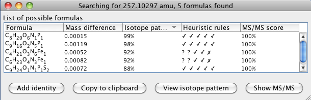

Formula prediction
Description
This module tries to calculate all possible molecular formulas for a peak, using given
elemental and heuristic constraints. The module can be invoked in two ways: either by
selecting a peak list and starting the prediction module from MZmine menu, or by
selecting a single peak within a peak list and starting the prediction for this
individual peak. The second method is recommended, because it allows the
user to select the right ionization adduct.
Selection of the peak for formula prediction:

List of formula candidates:

Method parameters
- Peak m/z
- Detected m/z value of the peak. This is set automatically according to the peak subjected to identification.
- Charge
- Charge of the peak being identified. This value is used to calculate the neutral mass.
- Ionization method
- Type of ionization that produced the peak subjected to identification. This is used to calculate the neutral mass.
- Neutral mass
- This value is automatically calculated from the parameters above. The neutral mass represents the final search term for querying the on-line database.
- Number of results
- Limit for the number of results to be predicted. Please not that limiting the number to X does not mean that X best results will be returned, simply first X results matching the constraints will be returned.
- Mass tolerance
- Tolerance of the neutral mass for searching the formula.
- Elements
- Elements allowed in the formula and their minimum and maximum counts.
- Isotope pattern filter
- If selected, only results which fit the required isotope pattern similarity score will be returned.
- Mass tolerance for isotopes
- m/z tolerance for calculating the isotope pattern score. This should be higher than m/z tolerance for comparing the mass of the formula to the peak mass.
- Isotope pattern score threshold
- The score required for the isotope pattern filter.
- Heuristic rules
- Selection of heuristic rules to restrict the candidate formulas. See Kind and Fiehn: Seven Golden Rules for heuristic filtering of molecular formulas obtained by accurate mass spectrometry. BMC Bioinformatics (2007).
- MS/MS filter
- Restrict the formulas to those that can be interpreted in the peak’s MS/MS pattern.
- MS/MS mass tolerance
- m/z tolerance for MS/MS scans.
- MS/MS noise level
- All MS/MS data points below this intensity will be ignored.
- MS/MS score threshold
- Only formulas with MS/MS matching score above this level will be reported.